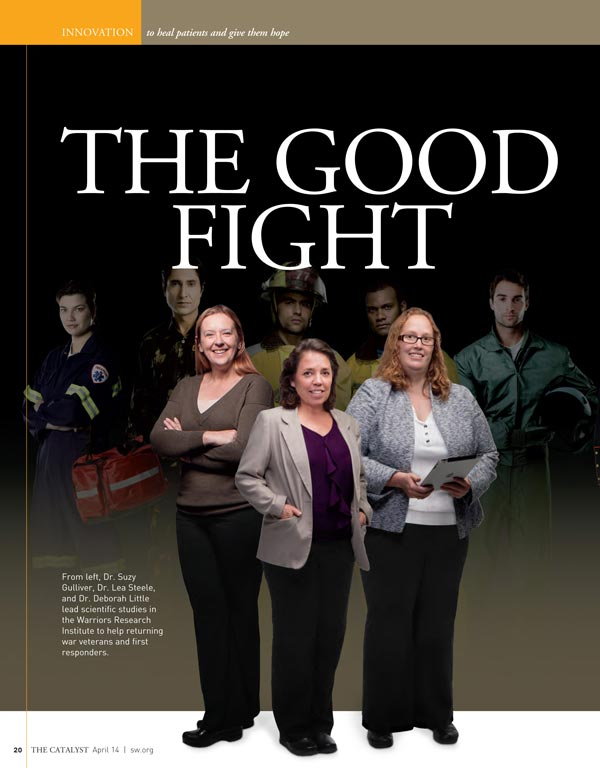

	<div class="right large-6 medium-6 columns small-12 columns" style="margin-left: 10px;">
    	
    	<p class="caption">After leaving the Waco Center of Excellence, former center director Suzy Gulliver, former imaging director Deborah Little and Baylor University researcher Lea Steele joined forces at Scott and White’s Warrior Research Institute to study traumatic experiences, brain injury, and toxic exposure. The trio is pictured here in the April edition of The Catalyst, the magazine of the Scott and White Healthcare Foundation.</p>
    </div>